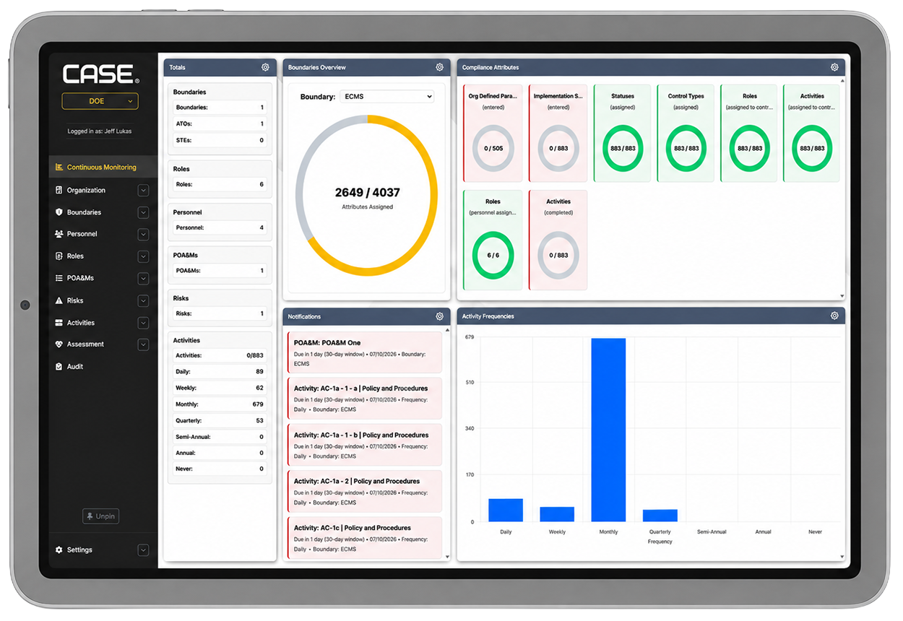

Case Study
Enterprise Security Application Modernization
Modernizing the user experience of a complex enterprise governance, risk, and compliance application through UI redesign, new workflows, authentication improvements, SQL-backed functionality, and front-end development.

Overview
My Role
I joined Ripcord Security Software to help modernize the front end and user experience of an existing enterprise Governance, Risk, and Compliance application. The product's core cybersecurity and compliance functionality was already established, while the interface, workflows, and several supporting application features required redesign and further development.
Working alongside the senior developer and company leadership, I contributed across UI/UX design, front-end implementation, Flask workflows, SQL-backed functionality, authentication, data visualization, and application-wide usability.
Problem
The Challenge
The application supported complex cybersecurity and compliance workflows, but its interface had developed around individual features rather than a unified user experience.
It relied heavily on a basic tab-based structure, displayed large amounts of information with limited visual hierarchy, and became more difficult to navigate as new functionality was added. Users needed a clearer way to move between organizations, boundaries, assessments, audits, risks, activities, and other connected areas of the platform.
The challenge was to modernize the experience without disrupting the mature business logic and specialized compliance functionality already built into the application.


Contributions
Design & Development
My work focused on creating a clearer interface architecture around the application's existing functionality while also extending the product with new pages, workflows, and database-backed features.
- Redesigned major application screens and workflows through wireframes, layout planning, and front-end implementation.
- Built responsive interfaces using HTML, CSS, JavaScript, Bootstrap, and Flask templates.
- Created a persistent sidebar navigation system that made the application's major modules easier to access.
- Added an organization switcher that updated the active organization's information across connected application pages.
- Built new audit and assessment pages and improved workflows for viewing and managing compliance-related information.
- Contributed Flask routes, business logic, and front-end integrations supporting new and updated functionality.
- Added and updated SQL tables and database-backed functionality for authentication, reporting, user management, and application workflows.
- Improved authentication-related flows and tested integration with the application's existing Active Directory environment.
- Developed data visualization and dashboard components that made status, activity, and compliance information easier to interpret.
- Built document import functionality that accepted multiple file formats and helped transform extracted information into structured application data.
Approach
Modernizing without a Total Rebuild
The goal was not to replace the application's proven cybersecurity and compliance logic. Instead, we separated outdated presentation code from the core functionality and developed a more maintainable front end around the existing system. We essentially stripped a small house to it's foundation and built a mansion above it.
I worked through an iterative process of sketching layouts, reviewing requirements with the owner and senior developer, testing how new interface decisions affected existing workflows, and refining the implementation as additional product needs were identified.
This approach allowed the application to retain its specialized enterprise functionality while gaining a more consistent structure, clearer navigation, improved visual hierarchy, and room for future expansion.

{kind=link}
{kind=link}
{kind=link}
{kind=link}
Result
A More Clear, Simplified Application
The modernization created a more cohesive application experience across dashboards, organizations, boundaries, assessments, audits, activities, risks, authentication, and supporting workflows. A unified style that gave a simplified experience, user-driven.
Information became easier to navigate and interpret, while the redesigned interface provided a stronger foundation for adding functionality without increasing visual and workflow complexity.
The project also gave me practical experience contributing across the application stack within a small development team, including extending my UI/UX and responsive front-end development skills, Python and Flask, SQL, authentication, data visualization, document automation, and enterprise workflow design.